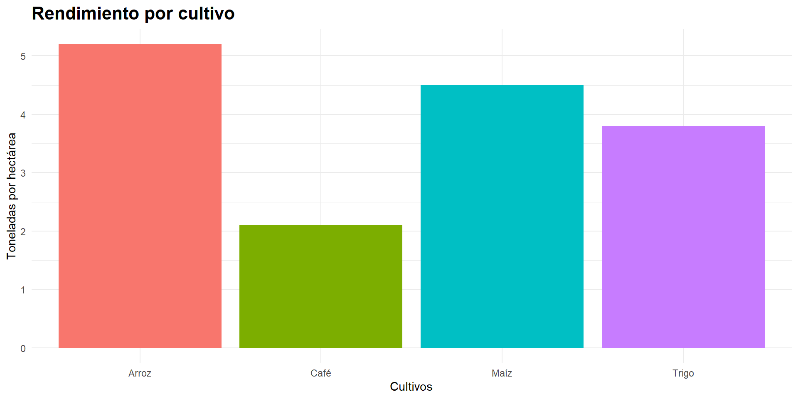
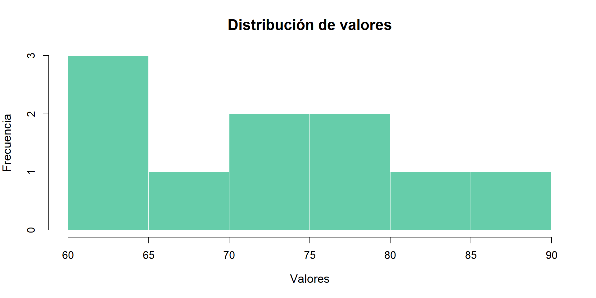
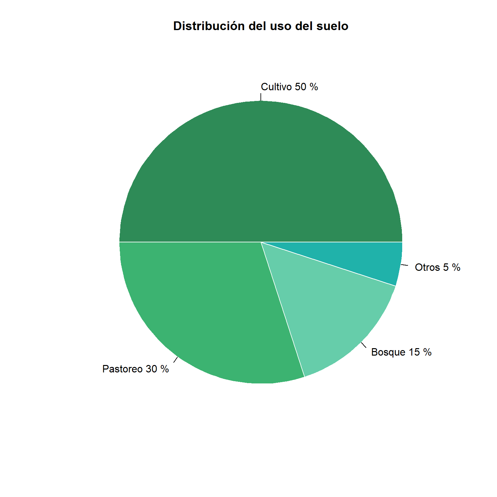
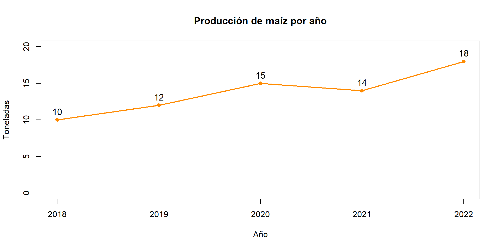
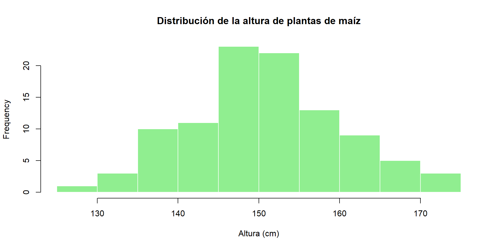
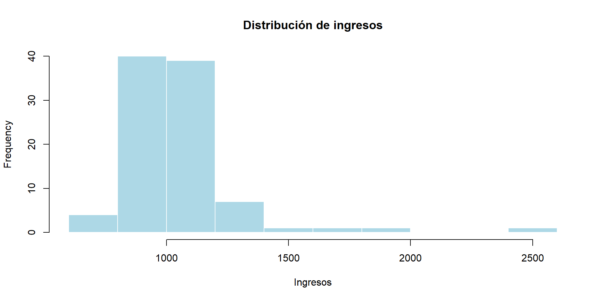
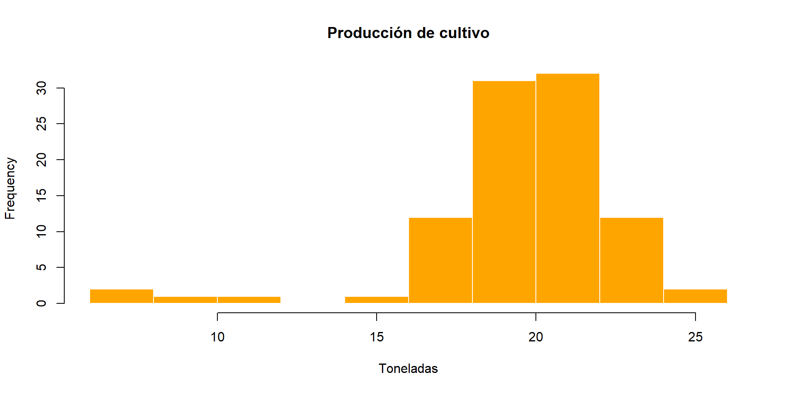

| Cantidad.de.hijos | fi | Fi | hi | Hi | Porcentaje.. | Porcentaje.acumulado |
|---|---|---|---|---|---|---|
| 0 | 250 | 250 | 0.250 | 0.25 | 25.0 | 25 |
| 1 | 200 | 450 | 0.200 | 0.45 | 20.0 | 45 |
| 2 | 300 | 750 | 0.300 | 0.75 | 30.0 | 75 |
| 3 | 160 | 910 | 0.160 | 0.91 | 16.0 | 91 |
| 4 | 50 | 960 | 0.050 | 0.96 | 5.0 | 96 |
| 5 | 20 | 980 | 0.020 | 0.98 | 2.0 | 98 |
| 6 | 10 | 990 | 0.010 | 0.99 | 1.0 | 99 |
| 7 | 7 | 997 | 0.007 | 0.997 | 0.7 | 99.7 |
| 8 | 2 | 999 | 0.002 | 0.999 | 0.2 | 99.9 |
| 9 | 1 | 1000 | 0.001 | 1 | 0.1 | 100 |
| Total | 1000 | 1.000 | 100.0 |
Bioestadística Fundamental
Departamento de Estadı́stica, Sede Bogotá
Clase 2
Estadística descriptiva de una variable
- La estadística descriptiva de una variable es el conjunto de métodos y técnicas que permiten organizar, resumir y describir los datos obtenidos de una sola característica o variable, con el fin de facilitar su interpretación.
Las técnicas y métodos mas utilizados son:
- Tablas de frecuencias.
- Gráficos (barras, histogramas, gráficos circulares y otros).
- Medidas estadísticas como la media, mediana, moda, varianza y desviación estándar.
Su objetivo principal es:
- Presentar la información de manera clara y comprensible, sin realizar inferencias o conclusiones más allá de los datos analizados.
Presentación tabular y gráfica
- Las tablas de frecuencias y los gráficos (circulares, de barras) permiten conocer la distribución (ya sea en una población o en una muestra) de los valores de una variable categórica.
- La distribución de los valores de la variable dentro de las diferentes categorías se puede expresar en cantidades, en proporciones o en porcentajes.
- Para representar gráficamente la distribución de los datos correspondientes a una variable numérica (discreta o continua) también se utilizan tablas de frecuencias y un gráfico.
- Aunque es posible hacer tablas de frecuencia y gráficos con pocos datos, su uso es más recomendable cuando se tiene una mayor cantidad de información, ya que permite una mejor interpretación.
Presentación tabular
- Una tabla de frecuencia es una representación tabular en la que se distribuyen los datos de una variable, indicando la frecuencia con la que aparece cada valor o intervalo de valores.
- Su objetivo es simplificar grandes cantidades de información, permitiendo identificar patrones, tendencias y comportamientos dentro de los datos.
Tabla de frecuencias
Elementos principales de una tabla de frecuencias
- Datos o clases: valores individuales o intervalos.
- Frecuencia absoluta (\(f_i\)): número de veces que aparece un dato.
- Frecuencia acumulada (\(F_i\)): suma progresiva de las frecuencias absolutas.
- Frecuencia relativa (\(h_i\)): proporción o porcentaje respecto al total.
- Frecuencia relativa acumulada (\(H_i\)): suma progresiva de las frecuencias relativas.
Pasos para construir una tabla de frecuencias
-
- Determinar el número de clases o intervalos.
-
- Hallar el rango.
-
- Determinar la amplitud del intervalo.
-
- Armar los intervalos
-
- Ubicar las frecuencias en los intervalos.
-
- Llenar la tabla de frecuencias.
1. Determinar el número de clases o intervalos
- Los datos pueden agruparse en el numero de clases o intervalos que se desee; sin embargo es recomendable utilizar criterios como la raíz cuadrada del tamaño de la muestra o la formula de Sturges para definir una cantidad apropiada de intervalos.
- Formulas para determinar el numero de clases:
- \(k=\sqrt{n}\), donde \(k\) es el numero de clases y \(n\) es el tamaño de la muestra o numero de datos.
- \(k=1+3.3322\log_{10}(n)\), donde \(k\) es el numero de clases y \(n\) es el tamaño de la muestra o numero de datos.
- Un numero razonable de clases puede ser entre 5 y 20 clases, si el resultado al aplicar las formulas da un numero decimal se redondea al entero mayor mas cercano.
- Nota: Si el número de intervalos no hay que calcularlo, se procede al paso 5.
2. Hallar el rango
-
Después de que se tenga el numero de clases establecido, se procede a hallar el máximo y mínimo de los datos, para hallar el rango.
El rango se calcula como: \[ 𝑅𝑎𝑛𝑔𝑜:𝑅=𝑀𝑎𝑥𝑖𝑚𝑜−M𝑖𝑛𝑖𝑚𝑜 \]
3. Determinar la amplitud del intervalo
-
La amplitud determina el ancho del intervalo donde van a ir las frecuencias en la tabla, por lo general se utilizan intervalos o clases de la misma longitud.
La amplitud del intervalo se puede redondear también si se desea.
Con el rango y el numero de clases se puede determinar la amplitud del intervalo con la siguiente formula: \[ Amplitud: A= \frac{R}{k} \]
4. Armar los intervalos
-
Para armar los intervalos se necesita el mínimo de los datos, la amplitud y el numero de clases, con esta información se pueden armar los intervalos.
El mínimo de los datos se toma como el límite inferior del primer intervalo, el límite superior se obtiene sumando el mínimo mas la amplitud, el segundo intervalo se obtiene sumando el límite superior del primer intervalo mas la amplitud y así sucesivamente hasta completar el numero de clases o intervalos establecidos.
5. Ubicar las frecuencias en los intervalos
- Ya con los intervalos armados, se procede a ubicar las frecuencias en cada intervalo, para esto se cuenta la cantidad de datos que pertenecen a cada intervalo y se coloca esa cantidad en la tabla de frecuencias.
6. Llenar la tabla de frecuencias
- Con los intervalos armados y las frecuencias ubicadas en cada intervalo, se procede a llenar la tabla de frecuencias en los elementos correspondientes de la tabla.
Elementos de la tabla de frecuencias
-
- Marca de clase \(𝑥_𝑖\): es el punto medio del intervalo.
- Se calcula como la suma del valor mínimo mas el valor máximo de la clase y el resultado se divide por 2 y se hace para cada intervalo.
-
- Frecuencia absoluta \(𝑓_𝑖\) : es la cantidad de veces que un dato pertenece a un intervalo o una clase.
-
- Frecuencia acumulada \(𝐹_𝑖\): es la suma progresiva de las frecuencias absolutas desde el primer valor o clase hasta el ultimo.
- En el ultimo intervalo tiene que dar el numero total de datos.
Elementos de la tabla de frecuencias
-
- Frecuencia relativa \(ℎ_𝑖\): es la proporción o fracción que representa cuántas veces aparece un valor con respecto al total de datos.
- Se obtiene dividiendo la frecuencia absoluta \(f_i\) entre el número total de datos \(n\).
-
- Frecuencia relativa acumulada \(𝐻_𝑖\): es la suma progresiva de las frecuencias relativas desde el primer valor o clase hasta el ultimo.
- En el ultimo intervalo tiene que dar 1.
-
- Porcentaje %: se calcula como la frecuencia relativa multiplicada por 100%.
- Porcentaje %: se calcula como la frecuencia relativa multiplicada por 100%.
-
- % acumulado: es la suma progresiva de los porcentajes en cada intervalo.
- En el ultimo intervalo tiene que dar el 100%.
Ejemplo1 (Variable cuantitativa discreta)
-
Se entrevistan 1.000 familias de la Ciudad de Buenos Aires, para saber cuántos hijos tiene cada familia.
Los datos son de la forma 0, 0, 3, 1, 1, 1, 2, 2, 2, 3, 1, 1, 2, 0, 0, 0, 2, 1, 8, 1, 1, 2, 3, 0, 0, 0…
Cada número es la cantidad de hijos de cada una de las familias entrevistadas.
Resultados
-
Debido a que la muestra es grande, es necesario resumir la información:
250 familias no tienen hijos.
200 familias tienen 1 hijo.
300 familias tienen 2 hijos.
160 familias tienen 3 hijos.
50 familias tienen 4 hijos.
20 familias tienen 5 hijos.
10 familias tienen 6 hijos.
7 familias tienen 7 hijos.
2 familias tienen 8 hijos.
1 familia tiene 9 hijos.
- En este caso no es necesario determinar el número de clases o intervalos, ya que la variable es cuantitativa discreta y los datos se pueden agrupar por su valor individual.
- Aplicando los pasos para construir la tabla de frecuencias, se obtiene la siguiente tabla:
Hallazgos
- El número de hijos más común es 2, con una frecuencia absoluta de 300 familias, lo que representa el 30% de la muestra, seguido por 0 hijos con 250 familias (25%) y 1 hijo con 200 familias (20%).
- Sumando los primeros 4 primeros porcentajes, se obtiene que el 91% de las familias tienen entre 0 y 3 hijos y el 9% restante tienen entre 4 y 9 hijos.
- Segun el estudio pocas familias tienen 4 o más hijos, lo que puede indicar una tendencia hacia familias más pequeñas en la Ciudad de Buenos Aires.
Ejemplo 2 (Variable cualitativa nominal)
-
Se hizo una encuesta a 200 estudiantes de la universidad nacional para conocer cual color de ojos era el mas predominante.
Los resultados fueron los siguientes: - Café: 90
- Negro: 60
- Azul: 25
- Verde: 15
- Miel:10
- En este caso no es necesario determinar el número de clases o intervalos, ya que la variable es cualitativa nominal y los datos se pueden agrupar por categorías.
- Aplicando los pasos para construir la tabla de frecuencias, se obtiene la siguiente tabla:
| Color.de.Ojos | fi | Fi | hi | Hi | Porcentaje | Porcentaje.Acumulado |
|---|---|---|---|---|---|---|
| Café | 90 | 90 | 0.450 | 0.450 | 45% | 45% |
| Negro | 60 | 150 | 0.300 | 0.750 | 30% | 75% |
| Azul | 25 | 175 | 0.125 | 0.875 | 12.5% | 87.5% |
| Verde | 15 | 190 | 0.075 | 0.950 | 7.5% | 95% |
| Miel | 10 | 200 | 0.050 | 1.000 | 5% | 100% |
| Total | 200 | 1.000 | 100% |
Hallazgos
- El color de ojos más común entre los estudiantes encuestados es el café, con una frecuencia absoluta de 90 estudiantes, lo que representa el 45% de la muestra, seguido por el color negro con 60 estudiantes (30%), el azul con 25 estudiantes (12.5%), el verde con 15 estudiantes (7.5%) y el miel con 10 estudiantes (5%).
- Los colores de ojos que mas predominaron fueron el café y el negro, con una participación del 75% en total.
Ejemplo 3 (Variable cuantitativa continua)
- Los siguientes datos corresponden a las alturas de plantas (en centímetros, con una aproximación de medio centímetro) de 100 cultivos de maíz evaluados por estudiantes de agronomía en un ensayo experimental.
- Las alturas son datos continuos, ya que la altura se mide y puede tomar cualquier valor dentro de un intervalo.
- 60 60,5 61 61 61,5 63,5 63,5 63,5 64 64 64 64 64 64 64 64,4 64,4 64,5 64,5 64,5 64,5 64,5 64,7 66 66 66 66 66 66 66 66 66 66 66,5 66,5 66,5 66,5 66,5 66,5 66,5 66,5 66,5 66,5 66,5 67 67 67 67 67 67 67 67 67 67 67 67 67,5 67,5 67,5 67,5 67,5 67,5 67,5 68 68 69 69 69 69 69 69 69 69 69 69 69,5 69,5 69,5 69,5 69,5 70 70 70 70 70 70 70,5 70,5 70,5 71 71 71 72 72 72 72,5 72,5 73 73,5 74.
- Para organizar y resumir esta información, se procede a construir una tabla de frecuencias agrupando las alturas en intervalos.
- Se determina el número de clases, el rango, la amplitud del intervalo, se arman los intervalos, se ubican las frecuencias en cada intervalo y se llena la tabla de frecuencias.
Pasos para construir la tabla de frecuencias
-
Paso 1: Determinar el número de clases o intervalos.
En el caso de este ejemplo, \(𝑛=100\)
\(k=\sqrt{100}=10\)
\(k=1+3.3322\log_{10}(100)=7.644≈8\) Tomaremos 8 intervalos para este ejemplo, por lo tanto \(k=8\). -
Paso 2: Hallar el rango.
El valor mínimo es 60 y el valor máximo es 74, por lo tanto el rango se calcula como:
\[ 𝑅𝑎𝑛𝑔𝑜: R = 74 - 60 = 14 \]
-
Paso 3: Determinar la amplitud del intervalo.
La amplitud se calcula como: \[ A = \frac{R}{k} = \frac{14}{8} = 1.75 \] Redondeando a un número más conveniente, se puede tomar una amplitud de 2 cm. -
Paso 4: Armar los intervalos.
El primer intervalo se establece desde el mínimo (60 cm) hasta el mínimo más la amplitud (62 cm), es decir, [60, 62).
El segundo intervalo será [62, 64), el tercero [64, 66), el cuarto [66, 68), el quinto [68, 70), el sexto [70, 72), el séptimo [72, 74) y el octavo [74, 76).
-
Paso 5: Ubicar las frecuencias en los intervalos.
Se cuenta cuántas alturas caen dentro de cada intervalo y se registra esa cantidad como la frecuencia absoluta \(f_i\) para cada intervalo. -
Paso 6: Llenar la tabla de frecuencias.
Con los intervalos definidos y las frecuencias contadas, se completa la tabla de frecuencias con los elementos correspondientes (marca de clase, frecuencia absoluta, frecuencia acumulada, frecuencia relativa, etc.).
- Al finalizar estos pasos, se obtiene una tabla de frecuencias que resume la distribución de las alturas de las plantas de maíz, facilitando su análisis e interpretación.
- Haciendo todos los cálculos la tabla de frecuencias queda de la siguiente forma:
| Intervalo | xi | fi | Fi | hi | Hi | Porcentaje | P.Acumulado |
|---|---|---|---|---|---|---|---|
| [60-62) | 61 | 5 | 5 | 0.05 | 0.05 | 5% | 5% |
| [62-64) | 63 | 3 | 8 | 0.03 | 0.08 | 3% | 8% |
| [64-66) | 65 | 15 | 23 | 0.15 | 0.23 | 15% | 23% |
| [66-68) | 67 | 40 | 63 | 0.40 | 0.63 | 40% | 63% |
| [68-70) | 69 | 17 | 80 | 0.17 | 0.8 | 17% | 80% |
| [70-72) | 71 | 12 | 92 | 0.12 | 0.92 | 12% | 92% |
| [72-74) | 73 | 7 | 99 | 0.07 | 0.99 | 7% | 99% |
| [74-76) | 75 | 1 | 100 | 0.01 | 1 | 1% | 100% |
| Total | 100 | 1.00 | 100% |
Hallazgos
- El intervalo con la mayor frecuencia absoluta es [66-68), con 40 plantas de maíz, lo que representa el 40% de la muestra.
- El 80% de las plantas tienen alturas menores a 70 cm, mientras que el 20% restante tienen alturas mayores a 70 cm.
- La distribución de las alturas muestra una mayor concentración en los intervalos [64-66), [66-68) y [68-70) indicando que la mayoría de las plantas se encuentran en esa franja de altura, con un 72%.
Presentación gráfica
- ¿Qué es una gráfica en estadística?
- Una gráfica es una representación visual de los datos que permite mostrar información de manera clara, resumida y comprensible, facilitando el análisis y la interpretación de los datos.
Objetivo de las gráficas
- Facilitar la comprensión de grandes cantidades de datos.
- Identificar patrones, tendencias y relaciones.
- Comparar diferentes conjuntos de datos.
- Apoyar la toma de decisiones.
- Comunicar información de manera visual y efectiva.
¿Cuál es el objetivo de una gráfica?
Principales tipos de gráficas en estadística:
- Gráfico de barras
- Histograma
- Polígono de frecuencias
- Gráfico circular (pastel)
- Gráfico de líneas
Gráfico de barras
- El gráfico de barras representa datos mediante barras separadas, permitiendo comparar diferentes categorías.
- Interpretación
- Permite comparar fácilmente las categorías y observar cuál tiene mayor o menor frecuencia.
- Ejemplo:
- Rendimiento de cultivos (ton/ha) en una finca.

Histograma
- Representa la distribución de una variable cuantitativa continua mediante barras unidas.
- Interpretación
- Permite observar la forma de la distribución (simétrica, sesgada, etc.) y ver que intervalo o categoría tiene mayor frecuencia.
- Ejemplo:
-
Las calificaciones de 10 estudiantes en un examen final fueron:
60, 62, 65, 70, 72, 75, 78, 80, 85, 90.

Polígono de frecuencias
- El polígono de frecuencias es una gráfica que se construye uniendo con líneas los puntos medios de los intervalos de una distribución de datos.
- Interpretación
- Permite ver la forma, concentración y tendencia de los datos.
- Ejemplo:
- Altura de las plantas.

Gráfico circular
- Muestra proporciones o porcentajes de un total.
- Interpretación
- Permite identificar qué categoría tiene mayor participación.
- Ejemplo:
- Uso del suelo

Gráfico de líneas
- Se usa para mostrar tendencias a lo largo del tiempo.
- Interpretación
- Permite analizar el comportamiento de los datos en el tiempo.
- Ejemplo:
- Producción anual de maíz.

Conclusión
- Las gráficas, tanto en contextos generales como en agronomía, permiten analizar datos de manera visual, identificar patrones importantes y apoyar la toma de decisiones en procesos productivos y científicos.
Interpretación de graficas
- ¿Cómo interpretar una gráfica?
- Identificar la forma de la distribución.
- Observar dónde se concentran los datos.
- Observar dónde se concentran los datos.
- Detectar simetría o asimetría.
- Analizar valores extremos.
- Relacionar con el contexto del problema.
Tipos de distribuciones
- Distribución simétrica
- Características:
- Forma de “campana”.
- Media ≈ mediana ≈ moda.
- Igual comportamiento a ambos lados.
- Ejemplo:
- Se mide la altura (en cm) de 100 plantas de maíz en condiciones uniformes de suelo, riego y fertilización.

Interpretación
- La mayoría de las plantas tienen alturas cercanas a 150 cm.
- La distribución es simétrica, indicando crecimiento uniforme.
- Hay pocas plantas muy pequeñas o muy grandes.
- Esto sugiere que el cultivo está en condiciones homogéneas.
- Distribución asimétrica positiva
- Los datos se concentran en las primeras categorías (valores bajos) y hay una “cola” hacia la derecha.
- Características:
- Cola hacia valores altos
- Media > mediana.
- Pocos valores grandes influyen en el promedio.
- Ejemplo:
- Ingresos de una muestra de 80 personas de una empresa.

Interpretación
- La mayoría de los datos se concentra en valores bajos y medios.
- Los valores disminuyen gradualmente hacia la derecha.
- Se observa una cola hacia la derecha.
- La distribución presenta asimetría positiva.
- Distribución asimétrica negativa
- La asimetría negativa ocurre cuando los datos se concentran en valores altos y presentan una cola hacia los valores bajos.
- Características:
- La cola se extiende hacia la izquierda.
- Media < mediana.
- Existen pocos valores bajos que afectan la distribución.
- Ejemplo:
- Producción de un cultivo (toneladas por hectárea), donde la mayoría de los terrenos tiene alta producción, pero algunos presentan rendimientos bajos.

Interpretación
- La mayoría de los valores se concentra en producciones altas.
- Existen pocos valores bajos que generan una cola hacia la izquierda.
- La distribución presenta asimetría negativa.
- El gráfico indica que la mayoría de los cultivos tiene buen rendimiento, pero en algunos casos presentan bajo desempeño.
Conclusiones presentación gráfica
- Las gráficas, tanto en contextos generales como en agronomía, permiten analizar datos de manera visual, identificar patrones importantes y apoyar la toma de decisiones en procesos productivos y científicos.
- La forma de una gráfica permite entender cómo se comportan los datos, identificar posibles problemas (valores atípicos) y tomar decisiones más informadas, especialmente en áreas como la agronomía donde la variabilidad es clave.
Conclusiones finales presentación tabular y gráfica
- La presentación tabular permite organizar los datos de manera estructurada, facilitando su lectura y análisis detallado.
- La presentación gráfica complementa las tablas al representar la información de forma visual, permitiendo identificar patrones, tendencias y comportamientos de manera rápida.
- El uso conjunto de tablas y gráficas mejora la comprensión de los datos y facilita la interpretación de la información.
- Las gráficas permiten detectar características importantes como la simetría, la asimetría y la presencia de valores atípicos.
- Una adecuada presentación de los datos es fundamental para apoyar la toma de decisiones en diferentes áreas, como la agronomía y otras disciplinas.